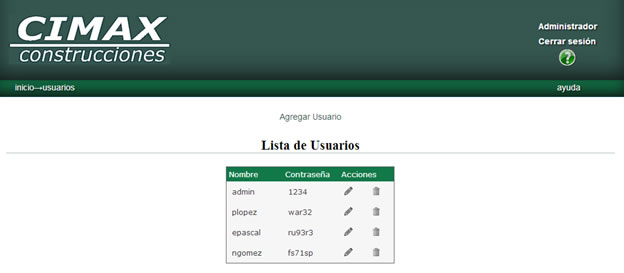
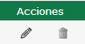
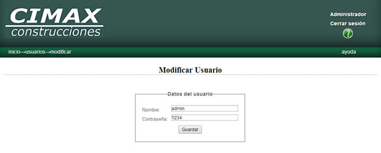
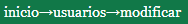
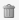
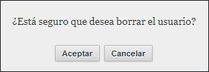
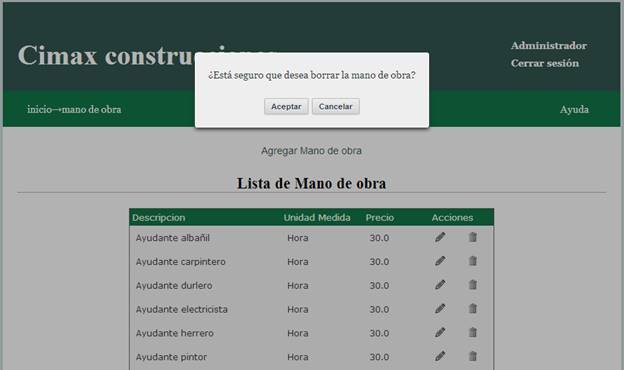
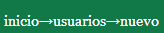

Usuarios
Al ingresar a la pantalla de usuarios, se le presentará la lista de usuarios que fueron dados de alta y tienen permisos para acceder al sistema.

Para cada usuario, las opciones disponibles de edición o borrado se encuentran en la columna acciones 
Editar usuarios
Para realizar la edición, haga click en el icono del lápiz  al lado del usuario que desea editar.
al lado del usuario que desea editar.
Será conducido a una nueva pantalla donde se cargan automáticamente los datos del usuario seleccionado.

En esta pantalla usted puede cambiar el nombre del usuario y/o su contraseña.
Al finalizar la edición, con el botón  podrá hacer efectivos los cambios.
podrá hacer efectivos los cambios.
En el caso que desee cancelar la edición, puede acceder a la página anterior haciendo click sobre “usuarios” en la barra de navegación de la esquina superior izquierda 
Borrar usuarios
Para realizar la baja de un usuario, haga click en el icono del cesto al lado del usuario a dar de baja.
Se le pedirá una confirmación antes de realizar la baja.

En caso que ya no quiera realizar la baja, el botón cancelar lo llevara nuevamente a la lista de usuarios sin haber dado de baja el usuario seleccionado.
En caso de aceptar, se borrará el usuario de la lista, y será redirigido a la página actualizada de la lista de usuarios.
Agregar usuarios
Para agregar un nuevo usuario, haga click en el vínculo en la mitad superior de la pantalla “Agregar usuario” 
Será conducido a una nueva pantalla donde se encuentran los campos disponibles para cargar los datos del nuevo usuario.
Nombre: ingrese el nombre del usuario a dar de alta
Contraseña: ingrese la contraseña.

Al finalizar la carga, con el botón  podrá hacer efectivos los cambios.
podrá hacer efectivos los cambios.
En el caso que desee cancelar el alta, puede acceder a la página anterior haciendo click sobre “usuarios” en la barra de navegación de la esquina superior izquierda 